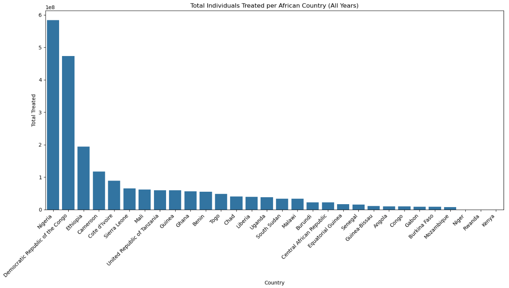
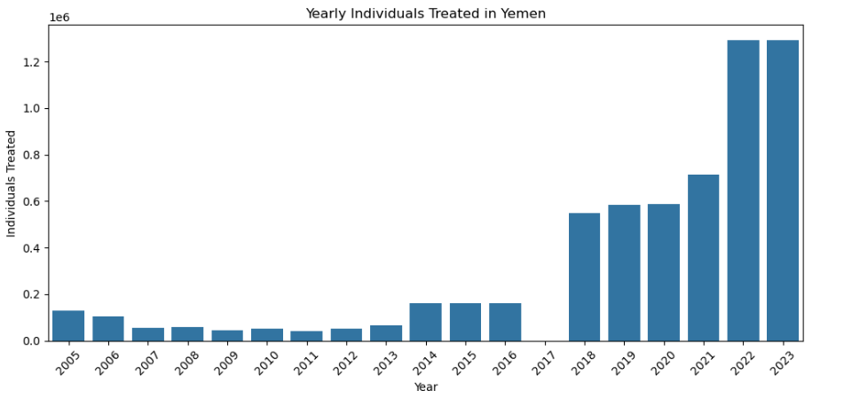
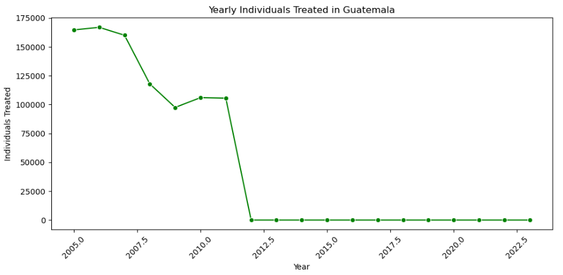

Data Analysis
In the analysis phase, the data is checked carefully to find patterns and important points that answer the main questions. Simple math and pictures like charts are used to make the data easier to understand. This helps show how different parts of the data are connected and find trends. Using clear pictures makes it easier to explain the results and make good choices.
Research Questions
1. How does the number of individuals treated vary over time globally?
Inference :
- Treatment coverage grew from 60 M (2005) to 170 M (2018) as MDA programs scaled up.
- A sharp drop to 110 M in 2020 reflects COVID-19 disruptions.
- Rapid rebound to 170 M by 2023 shows strong program recovery
2. Which region has the highest average number of individuals treated?
Inference :
- Africa has the highest (2.177B) average treated individuals.
- Eastern Mediterranean is significantly lower(20.3M).
- Americas has the lowest(2.94M) average among the three regions.
3. How does the number of individuals treated vary over time in Africa?
Inference :
- In 2005, around 60 million people were treated.
- The number gradually increased, reaching about 165 million by 2016.
- In 2020, there was a sharp drop to 110 million, due to COVID-19.
- The Treatment numbers rise again after 2020,by reaching a peak of 170 million in 2023.
- The trend shows a steady rise in treatment coverage over the years, with a temporary dip in 2020.
4. Which African countries have treated the highest number of individuals over all years?

Inference :
- Nigeria treated the highest number of individuals (570 million).
- Democratic Republic of the Congo follows (470 million).
- Other high-treatment countries include Ethiopia (180M), Cameroon (120M), and Côte d'Ivoire (90M).
- Most other African countries treated between 10M to 70M individuals.
- The least treated countries include Kenya, Rwanda, and Niger with treatments under 10 million.
5. How has the number of individuals treated in Nigeria changed annually from 2005 to 2023?
Inference :
- The number of individuals treated increased from about 21 million in 2005 to a peak of over 44 million in 2014 and 2018.
- There was a sharp drop to about 11 million in 2021, likely due to the COVID-19 pandemic.
- Treatment numbers recovered to around 35 million in 2023.
6. How did the number of individuals treated in Democratic Republic Congo change from 2005 to 2023?
Inference :
- In 2005, about 5 million people were treated.
- By 2009, this increased to 18 million.
- In 2015, around 30 million were treated.
- In 2019–2020, there was a drop in treatment due to the impact of the COVID-19 pandemic, as healthcare efforts were diverted to managing the outbreak.
- From 2020 to 2023, over 43 million people were treated each year.
7. How did the number of individuals treated in Ethiopia change from 2005 to 2023?
Inference :
- In 2005,3 million individuals were treated.
- Treatment numbers gradually increased to about 5 million by 2011.
- A fixed rise continued, reaching nearly 14 million in 2016.
- From 2016 to 2021, treatment numbers remained stable around 14–17 million.
- In 2023, treatment peaked at over 20 million individuals.
- A Continuous and stable increase in treatment numbers, with a significant peak in 2023.
8. Which country treated more individuals in total across all years Sudan or Yemen?
Inference :
- Sudan treated the highest number of individuals(around 14 million individuals in total).
- Yemen treated fewer people compared to Sudan(around 6 million individuals).
- Sudan treated more than twice as many people as Yemen.
9. How does the number of individuals treated vary over time in Eastern Mediterranean?
Inference :
- In 2005 1 million individuals were treated.
- The number of individuals treated sharply increased and reached at 3.5 million in 2009.
- A sudden drop occurred in 2010, falling below 0.5 million.
- From 2011 to 2019, treatment numbers stayed low, around 0.4 to 0.8 million.
- In 2021,treatment rose again to 1.5 million, then dropped slightly in 2023.
- A Sharp rise till 2009, major drop in 2010, followed by low and fluctuating treatment numbers.
10. How has the number of individuals treated in Sudan changed from 2005 to 2023?
Inference :
- 2009 & 2010: Peak treatment years (3.3 million individuals).
- 2005–2008: Rapid yearly increase from 0.7M to 2.1M.
- 2011: Sharp drop to 0.35M after the peak.
- 2012–2016: Very low and stable (0.1M–0.25M).
- 2017: Slight recovery (0.4M).
- 2018–2022: Consistently low (0.05M–0.15M).
11. How has the number of individuals treated in Yemen changed from 2005 to 2023?

Inference :
- From 2005 to 2012, treatments stayed below 100,000.
- Between 2013 and 2016, numbers slowly increased.
- In 2018, treatments raised sharply around 550,000.
- By 2021, over 700,000 people were treated.
- In 2022 and 2023, treatments peaked at over 1.2 million
12. In America, which countries have the highest individual treated count?
Inference :
- Guatemala had the highest total number of treatments, with around 900,000 individuals treated.
- Venezuela and Mexico followed closely, each with over 850,000 treatments.
- Brazil treated approximately 200,000 individuals.
- Ecuador accounted for around 100,000 treatments.
- Colombia had the lowest number of treated individuals, with only a small count reported.
13. How does the number of individuals treated vary over time in America?
Inference :
- In 2005,430,000 individuals were treated.
- The number of individuals treated remained high till 2008, then dropped to 320,000 in 2010.
- A sharp decline occurred in 2011, reaching below 50,000 by 2012.
- From 2012 to 2023, treatment numbers remained consistently low, around 30,000–40,000.
14. How did the number of individuals treated in Guatemala change yearly from 2005 to 2011?

Inference :
- 2005–2007: High treatment numbers 160,000–170,000 annually.
- 2008–2009: Sharp decline to 97,000 by 2009.
- 2010–2011: Mild recovery to 108,000 treated.
- Post-2011: No further treatments reported—likely due to successful elimination.
15. What is the trend in the number of individuals treated in Venezuela (Bolivarian Republic of) from 2005 to 2023?
Inference :
- From 2005 to 2012, about 90,000–100,000 people were treated each year.
- In 2013, treatments fell sharply to around 8,000.
- Between 2014 and 2019, numbers slowly rose to about 14,000.
- There was a small dip in 2020.
- From 2021 to 2023, treatment stayed between 10,000 and 15,000
- still much lower than before 2013.
16.How did the number of individuals treated in Mexico change from 2005 to 2011?

Inference :
- 2005–2008: High, stable coverage 135,000–145,000 treated annually.
- 2009: Sharp drop to 95,000 treatments.
- 2010–2011: Modest rebound to 100,000.
- 2012 onward: No treatments reported, reflecting Mexico’s achievement of elimination.
17. What is the yearly trend in the number of individuals treated in Brazil from 2005 to 2023?
Inference :
- 2005–2009: Gradual rise from 6,800 to 8,000 treated.
- 2010–2016: Steady growth to 10,500 treatments.
- 2017–2019: Peak years, reaching 12,400 individuals treated.
- 2020–2022: Slight decline during COVID-19, down to 9,800.
- 2023: Modest recovery to 10,400 treatments.
18. What was the trend in the number of individuals treated in Ecuador from 2005 to 2009?
Inference :
- Highest treatments occurred in 2006 and 2007, above 21,000 individuals.
- Slight drop in 2008 and 2009 to around 15,000.
- No treatment data available after 2009, indicating possible program completion or data gap.
19. What is the trend in the number of individuals treated in Colombia from 2005 to 2007?
Inference :
- Consistent treatment of around 1,150 individuals each year from 2005 to 2007.
- No data available after 2007, suggesting possible program conclusion or lack of reporting.
- Colombia had the lowest treatment numbers among the observed countries.
20. Distribution of onchocerciasis and preventive chemotherapy in endemic countries, 2023
21. Which country had the highest number of individuals treated for Onchocerciasis in 2023?
Inference :
- The Democratic Republic of the Congo leads with ~44.6M treatments, nearly half the global total.
- Nigeria follows with ~34.9M, indicating significant disease burden in these countries.
- The top 5 countries are all in Africa, reflecting the region’s high prevalence of onchocerciasis.
22. Which region had the highest Onchocerciasis treatments in 2023?
Inference :
- Africa accounts for ~99.9% of global treatments, underscoring its heavy disease burden.
- The Americas and Eastern Mediterranean contribute negligibly, with many countries reporting zero treatments.
- This distribution highlights the need for targeted interventions in Africa